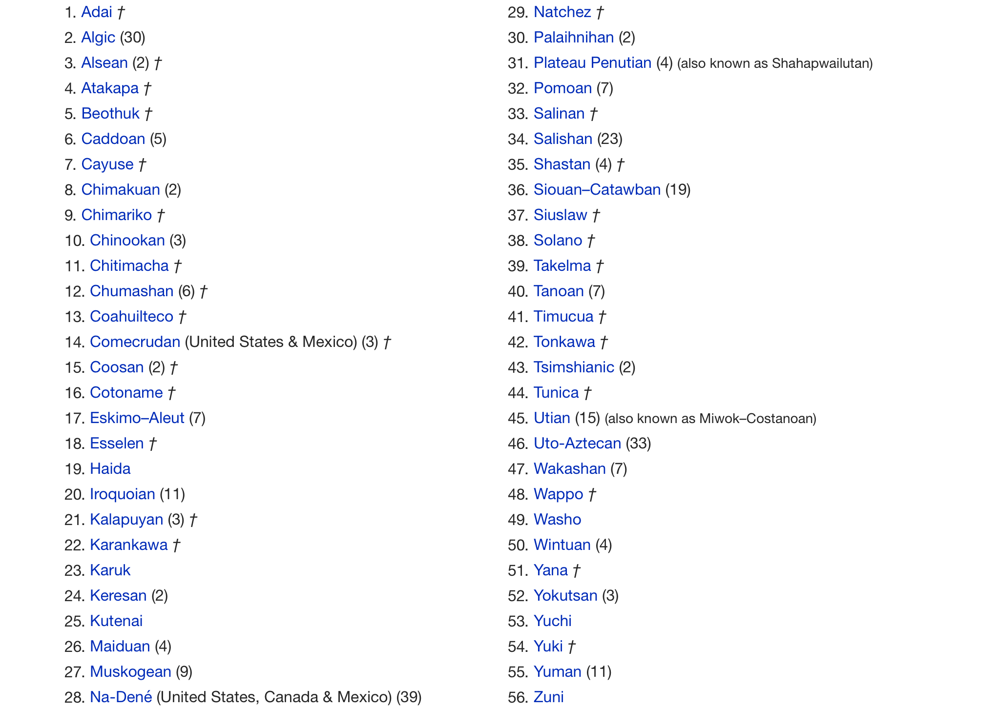
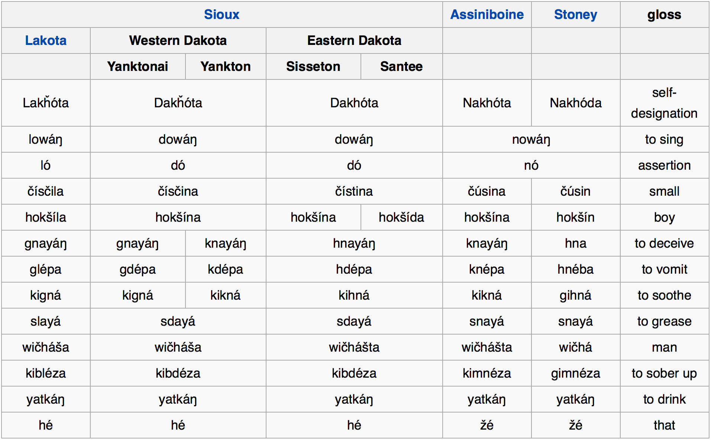
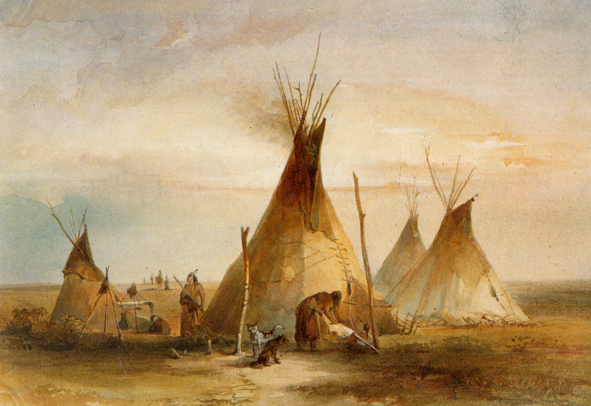
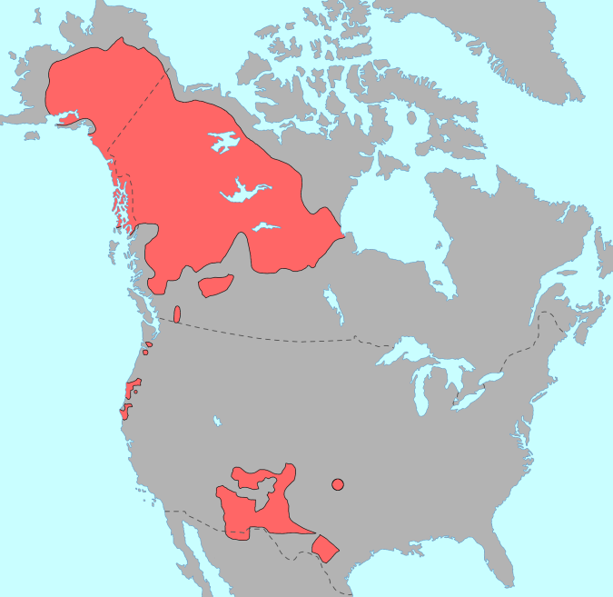
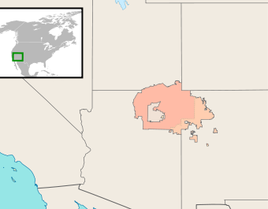
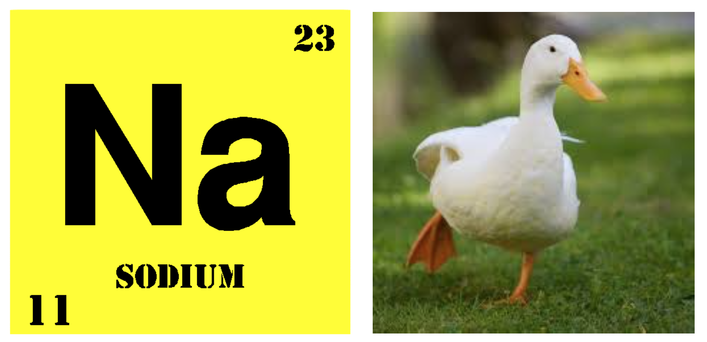
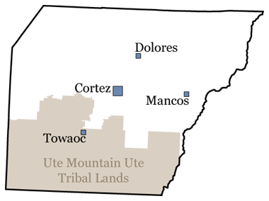
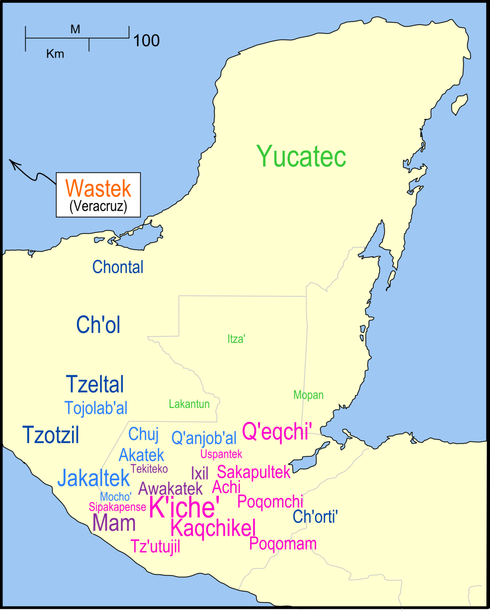
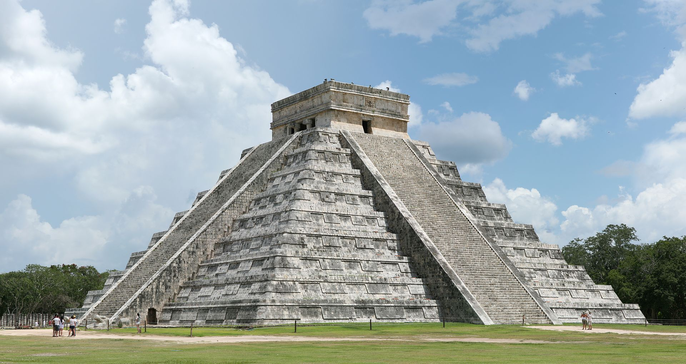

# Languages of North America ### LIGN 101 - Will Styler --- ### Today's agenda * Linguistic diversity in North America * Three Awesome Native American Language Families * Why Navajo made a great code in WWII/Korea. --- ### So, there's kind of a pattern in World Languages --- <img class="r-stretch" src="lotwimg/americadiversitymap.png"> --- --- <img class="r-stretch" src="lotwimg/americaonecolor.jpg"> --- <img class="r-stretch" src="lotwimg/nowspeakenglish.png"> --- ### North America was (and is, but less so) a linguistically diverse place! --- <img class="r-stretch" src="lotwimg/americadiversitymap.png"> --- ### North American Indigenous Languages! * Approximately 296 languages spoken above Mexico before colonialism * (That we know of) * These broke down into ~50 families --- ### Indigenous Language Families  --- ### *Currently surviving* Indigenous Language Families <img class="r-stretch" src="lotwimg/naallfamiliesliving.png"> --- ### We don't have time to talk about all of them * I'll talk about a few families today --- ### North American Language Families (That we're going to discuss today!) * Siouan Languages * Algonquian Languages * Athabaskan/Na-Dené Languages - Uto-Aztecan Languages --- ## Siouan Languages --- <img class="r-stretch" src="lotwimg/siouan_map.png"> --- ### Siouan * Also called "Siouxan" or "Catawban" or "Siouan-Catawban" * Contained 20 languages * Now contains 11 languages --- ### Well-known Siouan Languages * Dakota - 18,000 speakers * Lakota - 6000 speakers * This is the language used in "Dances with Wolves" * Assiniboine/Nakota - 150 speakers * Crow - 3000 speakers * Osage - 10 speakers * Hidatsa - 10 speakers --- ### Dakota, Nakota and Lakota are often just considered "Sioux" * Together, they're the fifth most widely spoken NA language * They've got fun history! ---  --- <lang>Lakota</lang><br><ldata>Siouxan - Great Plains</ldata> <img class="r-stretch" src="lotwimg/lakota_consonants.png"> --- <lang>Lakota</lang><br><ldata>Siouxan - Great Plains</ldata> <iframe data-autoplay width="840" height="500" src="http://www.youtube.com/embed/g-p4A4NcN6Q"></iframe> --- ### /txõka/ - Lakota for "big" <img class="r-stretch" src="lotwimg/tonka.gif"> --- ### /tipi/ - Lakota for "house"  --- ### There are other loanwords, but we don't have time for them all. * So Sioux me! --- <img class="r-stretch" src="humorimg/badpundog.jpg"> --- ## Algonquian Languages --- <img class="r-stretch" src="lotwimg/algonquian_map.png"> --- ### Algonquian * Part of "Algic" which also has Yurok and Wiyot * Around 30 languages * 15 have survived --- ### Prominent Algonquian Languages * Cree - 117,000 speakers (US and Canada) * Ojibwe - ~25,000 speakers * Blackfoot - ~3,200 speakers * Cheyenne - ~2,000 speakers * Arapaho - ~1,000 speakers * Massachusett (Extinct) --- ### Algonquian Languages are *Polysynthetic* --- ### Polysynthetic Languages Languages which are highly synthetic, incorporating more than one noun into a single word * Monday, Dr. Rood is going to present in Wichita, which is powerfully polysynthetic --- <lang>Ojibwe</lang><br><ldata>Algonquian - Great Lakes Region</ldata> <iframe data-autoplay width="840" height="500" src="http://www.youtube.com/embed/qCYf6cYR_es"></iframe> --- ### Arapaho is the language native to the Boulder Area * [Find out more online!](http://www.colorado.edu/csilw/arapahoproject/contemporary/maincontemp.htm) --- <lang>Arapaho</lang><br><ldata>Algoniuan - Colorado</ldata> <audio data-autoplay src="lotwimg/arapaho_ducks.mp3"></audio> <img class="r-stretch" src="lotwimg/arapaho_ducks.png"> --- ### Algonquian Loanwords * Chipmunk * Husky * Moose * Opossum * Skunk * Toboggan * Hickory --- ## 'Woodchuck' is a borrowing * From Naragansett *ockqutchaun* --- ### That means woodchucks never chucked wood <img class="r-stretch" src="humorimg/conspiracykeanu.jpg"> <!-- .element: class="fragment" --> --- ## Na-Dené Languages ---  --- ### Na-Dené Languages * Includes Tlingit (spoken in Canada and Alaska) and Athabaskan * 32 "Northern Athabaskan" Languages (spoken in Canada and Alaska) * ~4000 speakers * 7 "Coastal Athabaskan" Languages (in California and Oregon) * 5 are extinct, the other two have 8 speakers total. * 6 "Southern Athabaskan" Languages (in the American West and Southwest) * 3 are extinct, ~175,000 speakers (!!) * Has a proposed (and widely liked) link to the Yenisean Languages of Siberia --- ### Prominent Na-Dené Languages * Navajo - ~170,000 speakers * Apache - ~14,000 speakers * Jicarilla - ~300 speakers --- ### Let's focus on Navajo --- ### Spoken in the 4 corners region  --- ### In WWI, WWII, Korea and Vietnam, radio encryption was not a thing * This meant that anything you said into a radio, Hitler heard. * **One solution: Use a language the enemies can't understand!** --- ### Code Talkers * Speakers of obscure languages who speak their language as "code" during war to communicate * Choctaw, Cherokee, Comanche, Seminole, Navajo, and Basque were all used this way * Code words were used ("Turtle" for "tank", "Gah" ("rabbit") for R) to further complicate things! * The movie "Windtalkers" is about these soldiers * Let's talk about Navajo --- <danger>What features would you want a language to have if you wanted it to be difficult for an outsider to understand?</danger> --- ## Why Navajo is a great code-talking language --- ### Lots of speakers! * This means lots of people to ship overseas --- ### Centrally located in the US * If the Japanese took California, speakers are safe --- ### No close relatives spoken overseas * Polish is a really bad code language in a war against the Russians... --- ### Unusual Consonants! <img class="r-stretch" src="lotwimg/navajo_consonants.png"> --- ### Suprasegmentals * Vowel Length * Vowel Nasality * Tone (High vs. Low) --- ### Complex *Modality* --- ### Modality Marks the "reality" or nature of the action --- ### Navajo Modality * Markers for if a verb's action is Incomplete * ... or complete * ... or typical * ... or in progress * ... or in the future * ... or possible/desired --- ### Complex *Aspect* --- ### Aspect Marks the nature of the temporal boundaries and progress of an action * *Mode and aspect can blend together, and it's not always easy to distinguish them* --- ### Navajo Aspect * Mark whether the action is happening at a specific moment * ... or just generally happening * ... or ongoing for a while yet * ... or recently completed * ... or happening repeatedly * ... or temporally different from the last one --- ### Navajo Aspect (continued!) * ... or over a few different targets/locations * ... or involves an abrupt change in direction * ... or involves a change in form * ... or requires motion in a straight line * ... or just occurs sporadically, here and there --- ### Noun class and classifiers which attach to verbs * -ʼą́ – Solid Roundish Objects * -yį́ – Load, Pack, Burden * -ł-jool – Non-Compact Matter * -lá – Slender Flexible Object * -tą́ – Slender Stiff Object * -ł-tsooz – Flat Flexible Object * -tłééʼ – Mushy Matter * -nil – Plural Objects 1 * -jaaʼ – Plural Objects 2 * -ką́ – Open Container * -ł-tį́ – Animate Object * **Often, you *don't need to mention the noun again!*** --- ### Strongly synthetic morphology * Lots and lots of affixes * It's very agglutinating * Lots of affixes pile up on verbs * It's also kind of fusional * Phonological rules cause these suffixes to blend together * So *only experienced speakers can pick the many affixes apart!* --- ### So you have a language where... * Many of the consonants are unusual * Words are heavily modified by suprasegmentals * Verb meaning is really complex * Nouns aren't usually necessary after the first mention * All of this is accomplished in an unparsable affix-pile. --- <lang>Navajo</lang><br><ldata>Na-Dené - SW United States</ldata> <iframe data-autoplay width="840" height="500" src="http://www.youtube.com/embed/XFayFUiyv20?start=20"></iframe> --- > At the Battle of Iwo Jima, Major Howard Connor, 5th Marine Division signal officer, had six Navajo code talkers working around the clock during the first two days of the battle. These six sent and received over 800 messages, all without error. Connor later stated, "Were it not for the Navajos, the Marines would never have taken Iwo Jima." --- From 1879 to 1938, the US Government forcibly sent Native American kids to boarding schools where children were beaten for speaking their native Language. * ... and the last of these schools closed in ***1984*** --- ### Remember all those extinct language families? --- <img class="r-stretch" src="lotwimg/naallfamiliesliving.png"> --- ### Remember all those extinct language families? Our government fought hard to make that happen --- ### This isn't so distant --- ### Nichols Hall <img class="r-stretch" src="lotwimg/cheyennearapahohall.jpg"> --- ### David H. Nichols > ... was called upon by Territorial Governor John Evans in 1864 to suppress Indian uprisings. In his capacity as Captain of Company D, Nichols participated in the infamous Sand Creek Massacre on November 29, 1864. * Cheyenne-Arapaho hall was named "Nichols Hall" in his honor in ***1961*** --- ### Cheyenne Arapaho Hall <img class="r-stretch" src="lotwimg/cheyennearapahohall.jpg"> --- ### Linguistic Diversity is important * ... and there are always racist jerks who want to destroy it --- ### On a lighter note... --- <lang>Navajo</lang><br><ldata>Na-Dené - SW United States</ldata> <iframe data-autoplay width="840" height="500" src="http://www.youtube.com/embed/QzyphgquAFU"></iframe> --- ### Wrapping Up * North America *had* lots of linguistic diversity * We still have some linguistic diversity * Despite our government's best efforts... * Navajo is incredible * You should take "Native American Languages" here --- # Languages of Mexico and Meso-America ### LING 1020 - Will Styler --- ### Today's Agenda * Uto-Aztecan Languages * Mayan Languages * Agreement vs. Case --- ## Uto-Azetcan --- <img class="r-stretch" src="lotwimg/utoaztecan_northamerica.png"> --- <img class="r-stretch" src="lotwimg/utoaztecan_mexico.png"> --- ### Uto-Aztecan Languages * Spoken in the US and in Mexico * 30 languages * One of the larger families in North America --- ### Prominent Uto-Aztecan Languages * Nahuatl - ~1.5 *million* speakers * Tarahumara - ~45,000 speakers * We'll talk about Tarahumara Monday * Huichol - ~17,000 speakers * Tepehuan - ~16,000 speakers * Pima - ~15,000 speakers * Hopi - 7000 speakers --- ## Nahuatl! --- ### Want to incur Will's wrath?  <!-- .element: class="fragment" --> --- <danger>Nahuatl is not pronounced "Na-waddle"!</danger> --- # /ˈnaːwatɬ/ * ɬ is a voiceless lateral fricative --- ### Nahuatl was the language of the Aztec People <img class="r-stretch" src="lotwimg/aztecs.jpg"> --- ### Today's Messed-up Colorado History Lesson --- ### Montezuma was a great Aztec Leader <img class="r-stretch" src="lotwimg/montezuma.jpg"> --- ### He was killed by Spaniards led by Hernan Cortez <img class="r-stretch" src="lotwimg/cortez.jpg"> --- ### Montezuma has a county in Colorado --- ### The county is administered by the city of Cortez  --- Seriously, Colorado? --- <img class="r-stretch" src="humorimg/backattheranch.jpg"> --- ### English has a lotl of borrowings from Nahuatl * Coyote (from coyōtl) * Mesquite (from mizquitl) * Peyote (from peyōtl) * Tomato (from tomatl) * Chocolate (from xocolātl 'bitter water') --- ### And I mean a lotl! * Chili (from chīlli) * Avocado (from āhuacatl) * Guacamole (āhuacamōlli 'Avocado Sauce') * Tamale (from tamalli) * Chipotle (from chilpoctli 'smoked chili') --- ### Axolotl ([Image Source](http://www.warrenphotographic.co.uk/00108-albino-axolotl)) --- <lang>Nahuatl</lang><br><ldata>Uto-Aztecan - Mexico</ldata> <iframe data-autoplay width="840" height="500" src="http://www.youtube.com/embed/ZTBABGLJzIA?start=10"></iframe> --- Here's a picture of a gerbil in a sweater, because I can't think of a transition. --- ## Mayan Languages ---  --- ### Mayan Languages * Spoken in Central America * *Really* well documented * Around 6 *million* speakers * K'iche has the most (2 million) --- ### Mayan Languages were the language of the Mayan Civilization  --- ### The Maya had an awesome ideographic writing system <img class="r-stretch" src="lotwimg/mayan_script.jpg"> --- <iframe data-autoplay width="840" height="500" src="http://www.youtube.com/embed/u9LRbLXMzyM"></iframe> --- Nova did a whole special on this. * ### You can [watch it online for free](https://www.youtube.com/watch?v=H5ppfC6y-5s) --- (Modern Mayan languages use the Latin alphabet, though) --- ### Features of Mayan Languages * Agglutinating and Polysynthetic * VOS ordering * Numerical Classifiers * Relational Nouns! --- ### Relational Nouns --- ### Relational Noun A noun used to express prepositional meaning * These are an areal feature for Central America! --- <lang>Zapotec</lang><br><ldata>Oto-Manguean - Mexico</ldata> Mnnààa' zuu zh:ààa'n bzêiny. woman NEU.stand the.buttocks.of deer 'The woman is standing at the buttocks of the deer' --- <lang>Maya</lang><br><ldata>Mayan - Mexico</ldata> u-wach ulew it-face earth "on the earth" --- <lang>Zapotec</lang><br><ldata>Oto-Manguean - Mexico</ldata> loh gyizhi'iilly face chair 'on the chair' --- <section data-background="img/clickerbkgrnd.png"></section> ### Which of the following direct translations uses a relational noun to express 'the squirrel is in the bus'? A) 'Squirrel in bus' B) 'Squirrel bus.LOCATIVE-CASE C) 'squirrel stomach bus' D) 'squirrel entered bus' --- <section data-background="img/clickerbkgrnd.png"></section> ### Which of the following direct translations uses a relational noun to express 'the squirrel is in the bus'? A) 'Squirrel in bus' B) 'Squirrel bus.LOCATIVE-CASE <correct>C) 'squirrel stomach bus'</correct> D) 'squirrel entered bus' --- <lang>K'iche</lang><br><ldata>Mayan - Mexico</ldata> <iframe data-autoplay width="840" height="500" src="http://www.youtube.com/embed/7zQSfU5HkUc"></iframe> --- <img class="r-stretch" src="humorimg/segway.jpg"> --- (Sorry, I needed a segue!) --- <img class="r-stretch" src="humorimg/badpundog.jpg"> --- # Agreement! --- ### "What's the difference between case and agreement?" --- ## Case marks roles on arguments! --- ### Russian Case Marking * Will videt kochku * Will-NOM see-3sg CAT-ACC * "Will saw the cat" --- ### With case, you make the arguments wear nametags * So you know what role the arguments are playing --- ### Will-NOM see-3sg CAT-ACC <img class="r-stretch" src="lotwimg/myroleisagent.jpg"> --- ### Will-NOM see-3sg CAT-ACC <img class="r-stretch" src="lotwimg/myroleisobject.jpg"> --- ## Agreement marks identity on verbs! * "Rather than marking the arguments, let's just make sure the verb points to who did it!" --- <img class="r-stretch" src="lotwimg/chucknorriswashere.jpg"> --- ### Spanish Agreement Marking * Yo veo el gato * 1sg see.1sgsubj el cat * I see the cat * The arguments aren't marked * *... but the verb lets us know who did it!* --- ### Spanish Agreement Marking * Michael Bay hizo peliculas malas * Michael Bay make.3sgsubj.past movie-pl bad-pl * "Michael Bay made bad movies" * *We know that the plural argument did it!* --- ### Agreement can use many ways of showing identity * Person marking (1sg, 2sg, etc) * 2sg did it! * Number marking (singular, plural, etc) * The group with more than one item did it! * Gender marking (masc, fem, neuter) * It was the masculine thing! --- ### More ways of showing identity! * Noun class * It was the large, flat object! * New vs. old information markers * The thing I mentioned first did it! * <danger>Any others?</danger> --- ### Let's test your skills! --- <section data-background="img/clickerbkgrnd.png"></section> squirrele eta acornu squirrel.NOM eat acorn.ACC "The Squirrel ate the Acorn" A) "This is case" B) "This is agreement" --- <section data-background="img/clickerbkgrnd.png"></section> kula-knas Michael Bay Will judge-object.is.evil Michael Bay Will "Will judges Michael Bay" A) "This is case" B) "This is agreement" --- ## So, are we all in... # Agreement!? --- <img class="r-stretch" src="humorimg/badpundog.jpg"> --- ## Three methods of marking grammatical relations! * Word Order * Case * Agreement --- ### Some languages use more than one. * Spanish uses word order and agreement * Russian uses agreement and case * English uses agreement, word order, and case. * "I go" vs. "She goes", word order, and "he/him" --- (When more than one is used, it's usually because the first system isn't quite robust enough) * <danger>Why can't Spanish use just agreement?</danger> --- ### Wrapping up * Uto-Aztecan languages are awesome * We'll learn more Monday * Mayan languages are awesome * Know their features * Agreement and case are different * ... but both awesome --- ### ... and don't forget to order lots of ahuacamolli next time you go to Chilpoctli --- ## In Recitation: Something awesome. --- ## Next time: Tarahumara with Jesús Villalpando <correct>No reading.</correct> --- <huge>Thank you!</huge> --- --- <huge>Thank you!</huge> ---